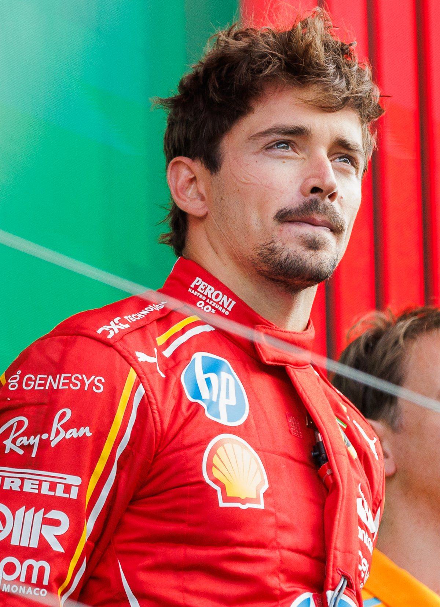
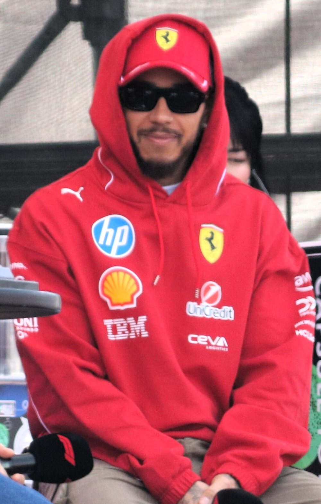

SF-25Scuderia Ferrari · 2025
正在装载空气动力学模型
连接中0%
Scuderia Ferrari · Formula 1 2025
SF-252025 season car
2025 赛季的 SF-25，16 号的 Leclerc 与 44 号的 Hamilton。下面按顺序看它的结构、气动、赛季成绩和队史。
398PTS车队积分
0WINS分站冠军
7PODIUMS登上领奖台
点击任意处继续 →
Technical
SF-25 的技术单
点这块，看 2025 规则与 SF-25 的设计理念
2022 年地面效应新规之后的第四代车。碳纤维蜂巢单体壳加 Halo，8 速纵置变速箱；这一年前悬从推杆改成拉杆、后悬仍是拉杆。下面几项是官方口径的硬指标。
动力单元066/12 · 1600 cc V6 Turbo
最高转速15,000 rpm
变速箱8 速纵置 + 倒挡
悬架前拉杆 / 后拉杆
整车质量800 kg（含车手与油水）
轮辋18 英寸 · 低扁平比
Aerodynamics
气流从哪儿走
翼面的作用只有一个：把气流加速，往下压。这一页的流场是打开时用涡格法现算的，不是贴图动画；进工作台还能切速度场、表面压力、底板气流三种看法。
进入工作台后，可以切到速度场、表面压力与底板气流三视图，边开车边看解在变。
↓ 继续
2025 Season
七次登台，398 分
车队年终第四，落后迈凯伦 435 分。全年没有胜利，7 次登台全部来自 Leclerc——沙特、摩纳哥、西班牙、奥地利、比利时、美国、墨西哥城。398 分里，Hamilton 在 44 号车上贡献 156 分。
点赛道卡，看那站的战报
数据来源：Formula 1 官方年终报告、Scuderia Ferrari 2025 赛季页。

Regulations · Design
技术单之外
2025 是这套地面效应规则的收官年，改动很小；真正大改在 2026。SF-25 因此是 SF-24 的进化，而不是重新设计。
Drivers
16 号和 44 号
点车手卡，看生涯时间轴
16
Charles Leclerc
摩纳哥 · 1997

2024 荷兰站领奖台 · Steffen Prößdorf / CC BY-SA 4.0
242 分，年度第五。全年 7 次登台、1 个杆位，是队内唯一上过领奖台的人；赛季中段连续四站进前三。
44
Lewis Hamilton
斯蒂夫尼奇 · 1985

铃鹿 2025 车迷区 · Liauzh / CC BY-SA 4.0
156 分，年度第六。转会法拉利的第一年：中国站冲刺赛拿下全场最快单圈，全年最接近领奖台的一次是迈阿密第四。
Anatomy
六处关键结构
车身上六个红点：前翼、侧箱进气口、底板、扩散器、尾翼、Halo。鼠标移到点上就出这块部件的名称、尺寸和气动作用。
鼠标移到红点上，看这块部件的名称、尺寸和气动作用
History
从 1950 到 2025
点年份看那年的照片，每 2 秒自动播下一张
1950
法拉利以厂商车队身份参加首届 F1 世界锦标赛，是至今唯一全勤的车队。
1961
156 “Sharknose” 拿下队史首个车手总冠军，V6 时代开启。
1979
312 T4 包揽车手与车队双冠，Flat-12 的最后一个辉煌。
2000–2004
舒马赫与车队五连冠，F1 历史上最具统治力的一段。
2007–2008
莱科宁与马萨先后拿下车手总冠军，2008 年再夺车队冠军。
2023
SF-23 挣扎于一致性与轮胎管理，车队年终第三。
2024
SF-24：五胜、22 次登台、652 分，年终第二。
2025
SF-25：Hamilton 加盟的第一年，七次登台、398 分，年终第四——本页这台车。
1950
Wikimedia Commons ↗
Workspace
想看它怎么跑？
工作台里能开车、开关 DRS、拆方向盘、看动力单元，顶栏的气动数字会跟着变。
操作指南KEYBOARD & MOUSE关闭 ✕
视图
1234外观 / 速度场 / 表面压力 / 底板气流
F开 / 关 DRS 尾翼，气动解同步切换
V播放 32 秒演示动画，Esc 退出
R回到默认机位
拆解
Q方向盘拆解：13 个部件，可拖「爆炸」滑杆
Z动力单元：引擎主体 / 排气 / 进气道
Esc退出当前视图、退出单件隔离、退出演示
驾驶
E进 / 出驾驶舱第一人称
WS加速 / 刹车
AD左 / 右转向，方向盘跟着转，松手自动回正
鼠标
拖拽环绕观察
滚轮缩放
点击点车身部件 → 单件隔离 + 右侧信息卡
P把当前画面存成 JPG
H隐藏 / 显示界面（截图用）
?随时打开本指南
车身模型：Ferrari SF-25 by Abu Saif（Sketchfab，CC-BY 4.0）· 气动为 VLM 涡格 + 地面镜像近似解，非 CFD 网格解
|V| m/s
03569103
来流 69.4 m/s @250 km/h
流线为 VLM 涡模型的近似场，非 CFD 网格解
TIER —
— ms
— fps
— calls
— tri
0km/h
0.0°
DRS
拖动转头 · 滚轮变焦 · E 退出
FIA 2024 技术规则 / Pirelli 公开规格 · 按 H 隐藏界面
3D 模型：Ferrari SF-25 by Abu Saif · Sketchfab · CC-BY 4.0
build —